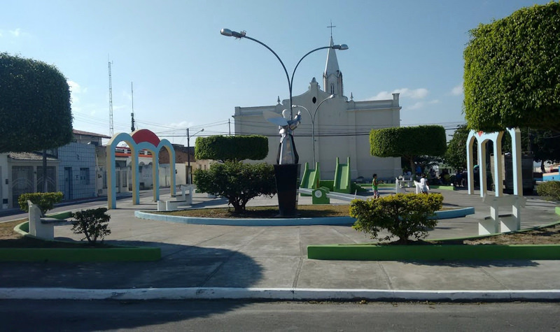

Itabaianinha
História
Segundo conta a sabedoria popular, por volta do século XVIII, imigrantes vindos de Itabaiana Grande, atual Itabaiana, faziam seu pouso nesta localidade, construindo pequenos casebres no alto da montanha. Seguiam seu rumo abandonando aí o marco inicial de uma povoação. Outros iam chegando pouco a pouco e construindo seus lares em torno desse marco. Pelo aspecto topográfico muito parecido com o da povoação de onde os referidos viajantes eram originários e ainda pela semelhança do solo consistente e de pedras miúdas, passaram a chamar a localidade de Itabaianinha.
Aí, então, ergueram uma capela em louvor a Nossa Senhora da Conceição, lugar onde atualmente é a Matriz da padroeira da cidade. Assim foi criada a ‘Princesa das Montanhas’, como foi chamada por João Pereira Barreto, dada a majestade do local, com situação privilegiada de domínio do planalto. Em 1832, tornou-se vila, com sede na povoação de Nova Tomar do Geru
fonte: https://itabaianinha.se.gov.br/hist%C3%B3riaPontos Turísticos
Parque de Vaquejada Gabriel Mota
A empresa Parque De Vaquejada E Eventos Gabriel Mota Ltda, localizada no bairro Zona Rural, em Itabaianinha-SE foi fundada em 2017. A atividade principal da empresa é Produção de Espetáculos de Rodeios, Vaquejadas e Similares.
Paroquia Nossa Senhora Da Conceicao
A empresa Paroquia Nossa Senhora Da Conceicao, localizada no bairro Centro, em Itabaianinha-SE foi fundada em 2004. A atividade principal da empresa é Atividades de Organizações Religiosas Ou Filosóficas.
Dados Gerais de acordo com o IBGE
| Prefeito (a) | Danilo Alves de Carvalho |
| Vice-Prefeito (a) | Eraldo Moreira dos Santos |
| Site do município | https://itabaianinha.se.gov.br/ |
| Área territorial | 501,794 km² |
| População estimada | 42.399 pessoas |
| Densidade demográfica | 78,87 hab/km² |
| IDHM | 0,556 |
| PIB per capita | R$ 10.388,17 |